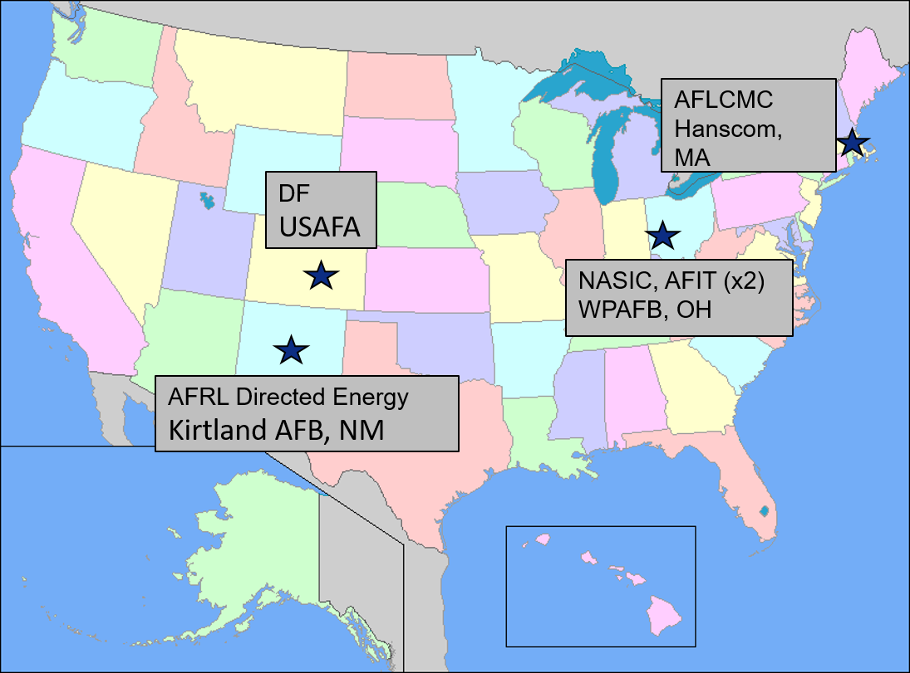
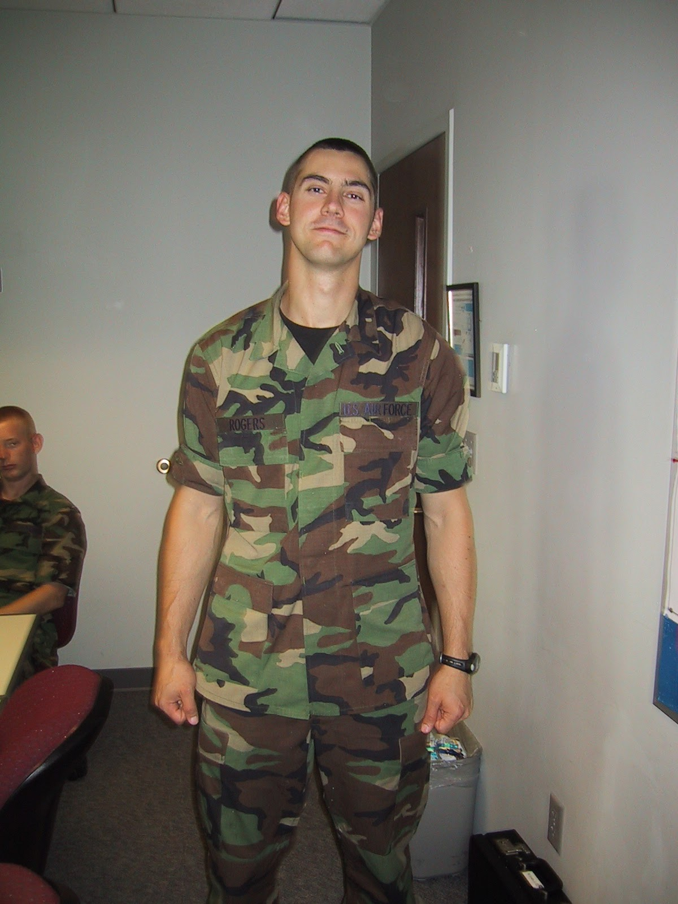

L1 — Course Introduction#
Slides
Learning outcomes#
By the end of this lesson, you will be able to:
State in plain language what a Software Defined Radio is and how it differs from a traditional hardware radio.
Identify the wireless signals you interact with every day and connect them to the SDR platforms and modulations we’ll cover.
Recognize the six modules of ECE 448 and how they build toward a self-defined final project.
Identify the SDR platforms and antennas we’ll use across the course (RTL-SDR, HackRF, PlutoSDR, ADALM-PHASER).
Welcome & introductions#
Instructor and student introductions — background, career interests, prior exposure to RF, DSP, or programming.
About your instructor#
Lt Col Neil Rogers, USAF (Ret.) — BS from TU; MSEE and PhD from AFIT. Currently the Erdle Chair at USAFA and a Field Applications Engineer at Analog Devices.

DF/USAFA · AFRL Directed Energy, Kirtland AFB · NASIC and AFIT (×2), WPAFB · AFLCMC, Hanscom AFB.
Officer Training School — where it started.Active Denial System 2 at AFRL Directed Energy. Section chief for Active Denial and High-Power Sources.
 Deployment with the 379th AEW.
Deployment with the 379th AEW.
E-8C Joint STARS — airborne ground surveillance radar.
 Directed the Academy Center for UAS Research (ACUASR) at USAFA through 2025.
Directed the Academy Center for UAS Research (ACUASR) at USAFA through 2025.
 Retirement from active duty — cadets sent me off with “No More Blues.”
Retirement from active duty — cadets sent me off with “No More Blues.”
Today my day job with Analog Devices puts me shoulder-to-shoulder with the team designing the ADALM-PLUTO and ADALM-PHASER we’ll use in this course.
 Field Applications Engineer at Analog Devices — the folks who make the ADALM-PLUTO and ADALM-PHASER.
Field Applications Engineer at Analog Devices — the folks who make the ADALM-PLUTO and ADALM-PHASER.
Outside the lab#
 Four kids (ages 11, 13, 15, 17). We just moved into a new house — fixing it up is a running hobby.
Four kids (ages 11, 13, 15, 17). We just moved into a new house — fixing it up is a running hobby.
CrossFit.
 Playing guitar with the band at Trace, my church.
Playing guitar with the band at Trace, my church.
How I teach#
We’re learning this together. I don’t have all the answers, and I’ll say so when I don’t.
Mistakes are part of learning. Make them cheaply, and make them count.
Ask questions. There is no such thing as a dumb question — if something isn’t clicking for you, it’s almost certainly not clicking for someone else.
Why this course exists#
Think about the last hour. How many wireless links did you use? Cellular data, WiFi, Bluetooth earbuds, a car key fob, an RFID badge, GPS on your phone, maybe a garage door opener, a drone downlink, ADS-B chirping overhead every second — modern life is soaked in RF. Every one of those signals is generated, transmitted, and received the same fundamental way. Once you know how, you can decode most of them yourself.
ECE 447 teaches you the theory behind these systems — the math of modulation, coding, and channel capacity. ECE 448 is where that theory meets a $30 dongle and a laptop. Instead of drawing block diagrams, you’ll build them in GNURadio. Instead of computing an SNR by hand, you’ll measure it. Instead of trusting that “the receiver demodulates the signal,” you’ll write the receiver.
What is a Software Defined Radio?#
Traditionally, a radio is a stack of specialized analog and digital hardware — filters, mixers, IF stages, demodulators — all tuned at the factory for one job (broadcast FM, GPS, LTE). Change the job and you change the hardware.
A Software Defined Radio collapses that stack. It puts an ADC as close to the antenna as physically possible on receive, and a DAC as close to the antenna as possible on transmit. Everything between the ADC/DAC and the user — filtering, mixing, demodulation, decoding — moves into software running on a general-purpose CPU or FPGA.
The consequence: the same $30 piece of hardware can be an FM radio, an ADS-B receiver, a GPS receiver, a spectrum analyzer, or a tool for reverse-engineering a garage door opener — depending only on the software you point at it.
Two ideas we’ll keep coming back to:
The signal is data. Once digitized, a radio wave is just a stream of complex numbers. Every DSP tool you know applies.
Real radios are messy. Noise, non-linearity, clock offsets, multipath — the reason SDR programming is hard isn’t the math, it’s the non-ideal hardware and channel.
Why this matters to you#
SDRs are how modern militaries build agile, reconfigurable RF systems. The same platform in your hands (a Pluto or Phaser) is a smaller sibling of what flies on aircraft, satellites, and deployed EW pods.
Communications — tactical radios, data links, SATCOM, Link-16.
Electronic warfare — DF, jamming, protection, cognitive EW.
Signals intelligence — SIGINT collection and analysis.
Radar — coherent radar processing, cognitive/adaptive radar (see ECE 444 for the antenna and beamforming side).
Test & measurement — spectrum monitoring, waveform validation, over-the-air testing.
By the end of this course you will have built receivers and transmitters for real waveforms — the same class of software running on the systems you may one day operate, specify, or defend against.
Course roadmap#
Seven modules, forty lessons, culminating in a self-defined final project:
Module |
Focus |
|---|---|
1 |
Foundations of Detection & Link Budgets |
2 |
SDR & GNURadio Foundations |
3 |
Analog Modulation (AM, FM) |
4 |
Digital Modulation (FSK, PAM, ASCII/PAM) |
5 |
Custom Blocks & Midterm Activity |
6 |
Waveform Applications & RF Reverse Engineering |
7 |
Final Project |
See the syllabus for the full schedule, the midterm activity description, and the final-project structure.
Show & tell — a real SDR, live#
Bring in the course SDR set (RTL-SDR, HackRF, PlutoSDR, ADALM-PHASER) plus a broadband whip antenna. Fire up GNURadio’s FFT sink, sweep across a few bands, and identify signals in real time — broadcast FM, ADS-B at 1090 MHz, cellular, WiFi, LTE, an FRS handheld. Point out that we’ll decode most of these ourselves by the end of the semester.
Hardware checklist: _TBD_
Preparing for L2#
Read the assigned sections on SDR hardware architectures before the next class — we’ll dig into the RF frontend, ADC/DAC, and host boundary, and connect sample rate, bandwidth, and dynamic range to what a given SDR can (and can’t) do.